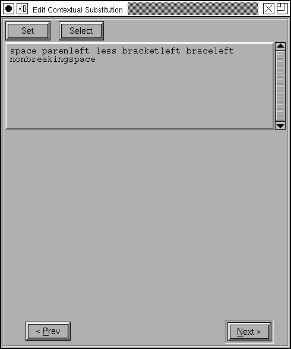

The
mac uses state machines where opentype would use a contextual lookup. The
example at right (with appropriate substitutions attached to it) will convert
an initial or medial short-s into a long-s (for doing renaissance printing).
The
mac uses state machines where opentype would use a contextual lookup. The
example at right (with appropriate substitutions attached to it) will convert
an initial or medial short-s into a long-s (for doing renaissance printing).
The
mac uses state machines where opentype would use a contextual lookup. The
example at right (with appropriate substitutions attached to it) will convert
an initial or medial short-s into a long-s (for doing renaissance printing).
PfaEdit currently supports 3 types of state machines: contextual glyph substitution, indic rearrangement, and contextual glyph insertion. The example at right is of contextual glyph substitution.
All state machines have certain similar features. They must all be assigned to a feature/setting combination, they all have a set of flags indicating in what circumstances they apply, they all have the glyphs of the font assigned to a set of classes, and finally they all have a series of transitions indicating how each state behaves when given input from the specified class.
On the mac there are four predefined classes, one meaning the end of input, one for all glyphs not specified elsewhere, one for the magic "deleted" glyph (Apple does not always delete a glyph when asked to do so, instead it retains a special mark in the glyph stream indicating that the glyph should be deleted later), and finally a class for the end of a line of text. Any classes after this are user defined. In the example at right there is one user defined class and it contains the letters in the latin alphabet. Any other characters in the font (the digits for example) will automatically be assigned to class 1 ("{Everything Else}").
The state machine itself is shown as a two dimensional matrix of transition, one transition for every state and class. Classes are shown at the top of the matrix, and states down the side. The transition from state 0 when given input from class 0 is shown in the upper left corner of the matrix, and so on.
When the state machine start up it will be in one of the first two states. It will be in state 0 at the beginning of input, and in state1 when it starts at the beginning of a new line.
The transitions look slightly differently depending on the type of state machine:
| Indic | Contextual | Insertion |
|---|---|---|
|
|
|
The first line of all transitions shows the next state. The next line contains a set of flags where "M" => the current glyph should be marked (the meaning of this becomes appearant later), "A" => processing should advance to the next glyph. For indic tables there is a third flag shown, "L" => the current glyph is the last glyph of the indic rearrangement.
The last two lines have varied meanings depending on the type of the state machine.
To edit a transition, simply click on it and a dialog will pop up, appropriate to the type of state machine.
| Indic | Contextual | Insertion |
|---|---|---|
|
|
|
See above for a description of what the fields mean.
If you wish to add a new state, simply edit a transition so that its next state field is the state number desired. PfaEdit will automatically create the state for you.
If you wish to add a new class press the [New] button under
the list of classes. If you wish to edit a class double click on that class.
The dialog should change to be like the one at right. The text field contains
a list of the names of the glyphs in this class. Pressing the [Set] button
will set that field to any selected glyphs in the font view. Pressing the
[Select] button will change the selection in the font view to match the glyphs
in the text.